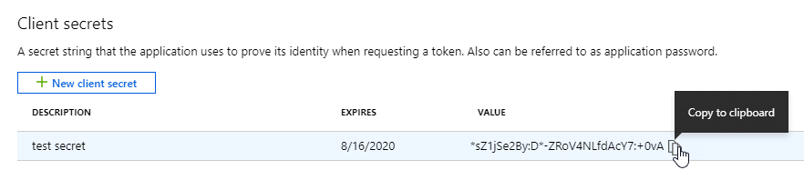

请求文档变更
请求文档变更 在 GitHub 上编辑
在 GitHub 上编辑 提供者指南
提供者指南设置 Azure 帐户并将其添加到 Cloud Manager
如果要在不同的 Azure 帐户中部署 Cloud Volumes ONTAP ，则需要为这些帐户提供所需的权限，然后将有关这些帐户的详细信息添加到 Cloud Manager 。

|
从 Cloud Central 部署 Cloud Manager 时， Cloud Manager 会自动添加部署 Cloud Manager 的 Azure 帐户。如果您在现有系统上手动安装 Cloud Manager 软件，则不会添加初始帐户。 "了解 Azure 帐户和权限"。 |
使用服务主体授予 Azure 权限
Cloud Manager 需要权限才能在 Azure 中执行操作。您可以通过在 Azure Active Directory 中创建和设置服务主体以及获取 Cloud Manager 所需的 Azure 凭据来为 Azure 帐户授予所需权限。
下图描述了 Cloud Manager 如何获得在 Azure 中执行操作的权限。与一个或多个 Azure 订阅绑定的服务主体对象表示 Azure Active Directory 中的 Cloud Manager 并分配给允许所需权限的自定义角色。

创建 Azure Active Directory 应用程序
创建一个 Azure Active Directory （ AD ）应用程序和服务主体， Cloud Manager 可使用该应用程序和服务主体进行基于角色的访问控制。
要创建 Active Directory 应用程序并将此应用程序分配给角色，您必须在 Azure 中拥有适当的权限。有关详细信息，请参见 "Microsoft Azure 文档：所需权限"。
-
从 Azure 门户中，打开 * Azure Active Directory* 服务。

-
在菜单中，单击 * 应用程序注册 * 。
-
单击 * 新建注册 * 。
-
指定有关应用程序的详细信息：
-
* 名称 * ：输入应用程序的名称。
-
* 帐户类型 * ：选择帐户类型（任何将适用于 Cloud Manager ）。
-
* 重定向 URI* ：选择 * 网络 * ，然后输入任何 URL ，例如 https://url
-
-
单击 * 注册 * 。
您已创建 AD 应用程序和服务主体。
将应用程序分配给角色
您必须将服务主体绑定到一个或多个 OnCommand 订阅，并为其分配自定义 "Cloud Manager 操作员 " 角色，以便 管理器在 Azure 中具有权限。
-
创建自定义角色：
-
通过将 Azure 订阅 ID 添加到可分配范围来修改 JSON 文件。
您应该为每个 Azure 订阅添加 ID 、用户将从中创建 Cloud Volumes ONTAP 系统。
-
示例 *
"AssignableScopes": [ "/subscriptions/d333af45-0d07-4154-943d-c25fbzzzzzzz", "/subscriptions/54b91999-b3e6-4599-908e-416e0zzzzzzz", "/subscriptions/398e471c-3b42-4ae7-9b59-ce5bbzzzzzzz" -
-
使用 JSON 文件在 Azure 中创建自定义角色。
以下示例说明了如何使用 Azure CLI 2.0 创建自定义角色：
-
AZ 角色定义 create -role-definition C ： \Policy_for_cloud Manager_Azure_3.7.4.json*
-
现在，您应具有一个名为 _Cloud OnCommand 管理器操作员 _ 的自定义角色。
-
将应用程序分配给角色：
-
从 Azure 门户中，打开 * 订阅 * 服务。
-
选择订阅。
-
单击 * 访问控制（ IAM ） > 添加 > 添加角色分配 * 。
-
选择 * OnCommand 云管理器操作员 * 角色。
-
保持选择 * Azure AD 用户，组或服务主体 * 。
-
搜索应用程序的名称（滚动无法在列表中找到）。

-
选择应用程序并单击 * 保存 * 。
Cloud Manager 的服务主体现在具有该订阅所需的 Azure 权限。
如果要从多个 Azure 订阅部署 Cloud Volumes ONTAP ，则必须将服务主体绑定到每个订阅。使用 Cloud Manager ，您可以选择部署 Cloud Volumes ONTAP 时要使用的订阅。
-
添加 Windows Azure 服务管理 API 权限
服务主体必须具有 "Windows Azure 服务管理 API" 权限。
-
在 * Azure Active Directory* 服务中，单击 * 应用程序注册 * 并选择应用程序。
-
单击 * API 权限 > 添加权限 * 。
-
在 * Microsoft APIs* 下，选择 * Azure Service Management* 。

-
单击 * 以组织用户身份访问 Azure 服务管理 * ，然后单击 * 添加权限 * 。

获取应用程序 ID 和目录 ID
将 Azure 帐户添加到 Cloud Manager 时，您需要提供应用程序（客户端） ID 和目录（租户） ID 。Cloud Manager 使用 ID 以编程方式登录。
-
在 * Azure Active Directory* 服务中，单击 * 应用程序注册 * 并选择应用程序。
-
复制 * 应用程序（客户端） ID* 和 * 目录（租户） ID* 。

创建客户端密钥
您需要创建客户端密钥，然后向 Cloud Manager 提供该密钥的值，以便 Cloud Manager 可以使用它向 Azure AD 进行身份验证。
|
|
将帐户添加到 Cloud Manager 时， Cloud Manager 会将客户端密钥称为应用程序密钥。 |
-
打开 * Azure Active Directory* 服务。
-
单击 * 应用程序注册 * 并选择您的应用程序。
-
单击 * 证书和密码 > 新客户端密钥 * 。
-
提供密钥和持续时间的问题描述。
-
单击 * 添加 * 。
-
复制客户端密钥的值。

此时，您的服务主体已设置完毕，您应已复制应用程序（客户端） ID ，目录（租户） ID 和客户端密钥值。添加 Azure 帐户时，您需要在 Cloud Manager 中输入此信息。
将 Azure 帐户添加到 Cloud Manager
在为 Azure 帐户提供所需权限后，您可以将此帐户添加到 Cloud Manager 中。这样，您就可以在该帐户中启动 Cloud Volumes ONTAP 系统。
-
在 Cloud Manager 控制台的右上角，单击设置图标，然后选择 * 云提供商和支持帐户 * 。

-
单击 * 添加新帐户 * 并选择 * Microsoft Azure* 。
-
输入有关授予所需权限的 Azure Active Directory 服务主体的信息：
-
应用程序 ID ：请参见 [Getting the application ID and directory ID]。
-
租户 ID （或目录 ID ）：请参见 [Getting the application ID and directory ID]。
-
应用程序密钥（客户端密钥）：请参见 [Creating a client secret]。
-
-
确认已满足策略要求，然后单击 * 创建帐户 * 。
现在，在创建新的工作环境时，您可以从 " 详细信息和凭据 " 页面切换到其他帐户：

将其他 Azure 订阅与受管身份关联
通过 Cloud Manager ，您可以选择要在其中部署 Cloud Volumes ONTAP 的 Azure 帐户和订阅。除非关联，否则您无法为托管身份配置文件选择其他 Azure 订阅 "托管身份" 这些订阅。
托管身份为 "初始 Azure 帐户" 从 NetApp Cloud Central 部署 Cloud Manager 时。部署云管理器后、 Cloud Central 创建了 OnCommand Cloud Manager 操作员角色并将其分配给云管理器虚拟机。
-
登录 Azure 门户。
-
打开 * 订阅 * 服务，然后选择要部署 Cloud Volumes ONTAP 系统的订阅。
-
单击 * 访问控制（ IAM ） * 。
-
单击 * 添加 * > * 添加角色分配 * ，然后添加权限：
-
选择 * OnCommand 云管理器操作员 * 角色。
OnCommand 云管理器操作员是中提供的默认名称 "Cloud Manager 策略"。如果您为角色选择了其他名称，请选择该名称。 -
分配对 * 虚拟机 * 的访问权限。
-
选择创建云管理器虚拟机的订阅。
-
选择 Cloud Manager 虚拟机。
-
单击 * 保存 * 。
-
-
-
对其他订阅重复这些步骤。
创建新的工作环境时，您现在应该能够为托管身份配置文件从多个 Azure 订阅中进行选择。